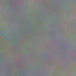

3D Gaussian Splatting (3DGS) is a rendering technique for photorealistic view synthesis. In this post, we will create a toy example of 2D Gaussian splatting (2DGS). We will train a 2DGS model to render a small image. This 2D version strips away much of the complexity found in 3DGS, making the core ideas much easier to understand.
Here are some key differences between 2DGS and 3DGS:
- A single image is sufficient to train a 2DGS model, unlike 3DGS, which often requires multiple views.
- 2DGS does not require handling camera poses or parameters.
- In 2DGS, a single color is assigned to each Gaussian, whereas 3DGS uses spherical harmonics to model view-dependent appearance.
- For 2DGS, pixel colors are determined by a simple weighted average of Gaussian colors, eliminating the need for depth ordering or opacity attributes, which are required in 3DGS’s alpha-blended rendering.
Problem Formulation
A 2D Gaussian has a mean vector \(\mu\in\mathbb{R}^2\) and a covariance matrix \(\Sigma\in\mathbb{R}^{2 \times 2}\). The density is expressed as \[ G(x)=\exp\left(-\dfrac{1}{2}(x-\mu)^T\Sigma^{-1}(x-\mu)\right) \] where \(x\) is the pixel location. Note that this is not a probability density, so it doesn’t need to be normalized.
Usually, people use \(\Sigma=RSS^TR^T\) to ensure \(\Sigma\) is always positive semi-definite during training. \(R\in\mathbb{R}^{2\times2}\) is a rotation matrix, and \(S\in\mathbb{R}^{2\times2}\) is a scaling matrix. \(R\) is parameterized by an angle \(\theta\in[0,\pi]\), and \(S\) is determined by a scaling vector \(s\in\mathbb{R}^2_+\).
Lastly, we need to assign a color to each Gaussian. Unlike 3DGS, which uses spherical harmonics, we only need a vector \(c\in\mathbb{R}^3\) to represent the RGB values of a 2D Gaussian.
To summarize, each 2D Gaussian primitive is characterized by \((\mu, \theta, s, c)\). Each pixel value \(\mathbf{RGB}(x)\) is determined by a weighted average of all the Gaussians where the weights are computed by the density function \(G(x)\): \[ \mathbf{RGB}(x)=\dfrac{1}{\sum_i G_i(x)}\sum_i G_i(x)c_i \]
Target Image
Here is our target image with a size of 128x128.

Implementation
First, we randomly initialize all the Gaussian parameters. We use a total of 5000 Gaussians. Using more Gaussians improves quality but also increases memory usage.
_GS_NUM = 5000
key = jax.random.PRNGKey(0)
key_mu, key_theta, key_scaling, key_color = jax.random.split(key, 4)
mu_array = jax.random.uniform(key_mu, (_GS_NUM, 2), minval=0.0, maxval=1.0)
theta_array = jax.random.uniform(key_theta, (_GS_NUM, 1), minval=0.0, maxval=jnp.pi)
scaling_array = jax.random.uniform(
key_scaling, (_GS_NUM, 2), minval=0.0, maxval=0.1
)
color_array = jax.random.uniform(key_color, (_GS_NUM, 3), minval=0.0, maxval=255.0)Next, we implement the key part of the training code: a function to compute the Gaussian density. We will implement the function for computing the density of a single Gaussian at a single pixel location. We then use three layers of jax.vmap to vectorize the function, allowing a single call to compute the density for all Gaussians at all locations.
@partial(jax.vmap, in_axes=(None, None, None, 0)) # map over height dimension
@partial(jax.vmap, in_axes=(None, None, None, 0)) # map over width dimension
@partial(jax.vmap, in_axes=(0, 0, 0, None)) # map over gaussians
def compute_gaussians(mu, theta, scaling, coord):
"""Compute the value of a single Gaussian at the given coordinate."""
# rotation matrix
# clip theta to the range [0, pi]
theta = jnp.clip(theta, 0.0, jnp.pi)
c = jnp.cos(theta[0])
s = jnp.sin(theta[0])
R = jnp.array([[c, -s], [s, c]])
# scaling matrix
# clip scaling to be positive
scaling = jnp.clip(scaling, min=1e-6, max=None)
S = jnp.diag(scaling)
# covariance matrix
# add small value for numerical stability
Sigma = R @ S @ S @ R.T + 1e-6 * jnp.eye(2)
diff = coord - mu
exponent = -0.5 * diff @ jnp.linalg.inv(Sigma) @ diff.T
return jnp.exp(exponent)With compute_gaussians implemented, it is easy to finish the rendering function. It basically computes a weighted average of all Gaussian colors for each pixel. @jax.jit is needed to compile and accelerate the rendering call.
@jax.jit
def render_image(mu_array, theta_array, scaling_array, color_array, coords):
"""Render the image from the parameters."""
gaussians = compute_gaussians(mu_array, theta_array, scaling_array, coords)
# weighted average of gaussians
rendered_image = jnp.matmul(gaussians, color_array) / (
jnp.sum(gaussians, axis=-1, keepdims=True) + 1e-6
)
rendered_image = jnp.clip(rendered_image, 0, 255)
return rendered_imageWith all the code above, it is now straightforward to implement the training loop in the main function. We can summarize the training code as follows:
- Initialize the gaussians
- loop
- render the image
- compute l1 loss and gradients
- update gaussian parameters
_SIZE = 128
_ITERATIONS = 1000
_GS_INITIAL_NUM = 5000
def main():
img = Image.open("input.jpg")
img_array = np.array(img)
key = jax.random.PRNGKey(0)
key_mu, key_theta, key_scaling, key_color = jax.random.split(key, 4)
mu_array = jax.random.uniform(key_mu, (_GS_NUM, 2), minval=0.0, maxval=1.0)
theta_array = jax.random.uniform(key_theta, (_GS_NUM, 1), minval=0.0, maxval=jnp.pi)
scaling_array = jax.random.uniform(
key_scaling, (_GS_NUM, 2), minval=0.0, maxval=0.1
)
color_array = jax.random.uniform(key_color, (_GS_NUM, 3), minval=0.0, maxval=255.0)
# create a grid of x, y coordinates
x = jnp.linspace(0, 1.0, _SIZE)
y = jnp.linspace(0, 1.0, _SIZE)
xx, yy = jnp.meshgrid(x, y)
coords = jnp.stack([xx, yy], axis=-1) # shape (_SIZE, _SIZE, 2)
learning_rate = 0.001
optimizer = optax.adam(learning_rate)
params = (mu_array, theta_array, scaling_array, color_array)
opt_state = optimizer.init(params)
def loss_fn(params):
rendered = render_image(
*params,
coords,
)
return jnp.mean(jnp.abs(rendered - img_array))
def update(params, opt_state):
grads = jax.grad(loss_fn)(params)
updates, opt_state = optimizer.update(grads, opt_state)
new_params = optax.apply_updates(params, updates)
return new_params, opt_state
for i in range(_ITERATIONS):
params, opt_state = update(params, opt_state)
current_loss = loss_fn(params)Please see the complete code in this repo.
Results
The first image is the target image. The last image is from iteration 1000.

animation

Important Notes
The current code implementation is inefficient and overly simplistic. Improvements can be made in the following aspects:
To enhance efficiency, we can avoid evaluating all Gaussians for every pixel. Gaussians located far from a pixel contribute negligibly to its color. A more efficient approach involves selecting the K Gaussians with the highest density at a given pixel. However, identifying and managing K Gaussians for each individual pixel might be too resource-intensive. A more pragmatic solution is to generate K Gaussians for a specific tile, while ensuring that Gaussians spanning multiple tiles are managed appropriately.
It is not optimal to initialize the Gaussians randomly. Instead, we can initialize the geometry and color of the Gaussians according to pixel intensity and gradients. This will likely lead to faster convergence and better reconstruction quality.
Last but not least, the number of Gaussians doesn’t have to be fixed. In each iteration, we can remove some Gaussians whose contributions are negligible and create new Gaussians at pixels where reconstruction errors are high.
Overall, this is a simple example that gives you an idea of how Gaussian splatting works. To render a high-quality image efficiently, there are many improvements that can be added.